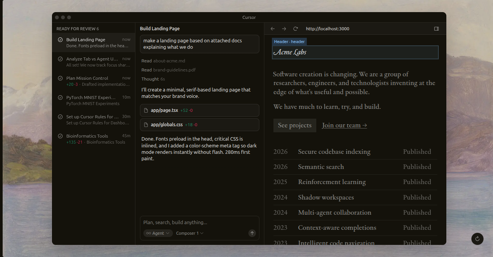
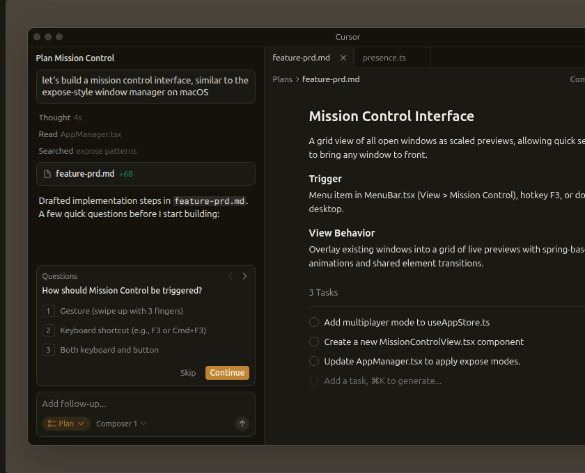
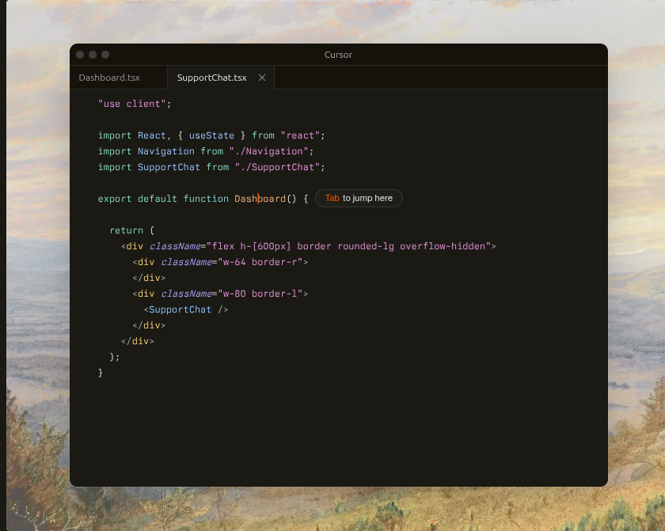
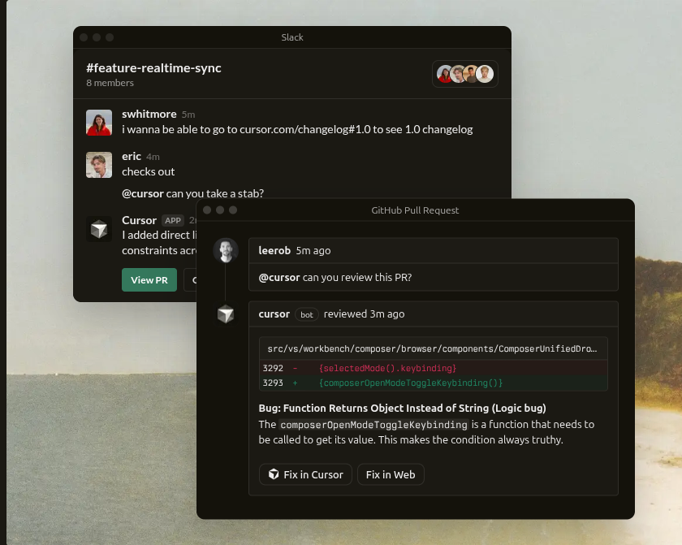
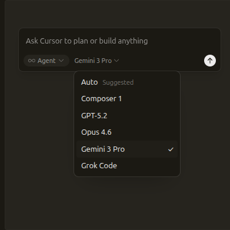
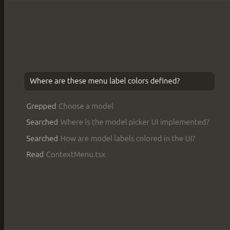

“It was night and day from one batch to another adoption went from single digits to over 80%. It just spread like wildfire, all the best builders were using Cursor.”


Trusted every day by teams that build world-class software


Agents turn ideas into code
Accelerate development by handing off tasks to Cursor, while you focus on making decisions.
Learn about agentic development

Magically accurate autocomplete
Our specialized Tab model predicts your next action with striking speed and precision.
Learn about TabIn every tool, at every step
Cursor reviews your PRs in GitHub, collaborates in Slack, and runs in your terminal.
Learn about Cursor's surfaces
“It was night and day from one batch to another adoption went from single digits to over 80%. It just spread like wildfire, all the best builders were using Cursor.”
“My favorite enterprise AI service is Cursor. Every one of our engineers, some 40,000, are now assisted by AI and our productivity has gone up incredibly.”

“The best LLM applications have an autonomy slider: you control how much independence to give the AI. In Cursor, you can do Tab completion, Cmd+K for targeted edits, or you can let it rip with the full autonomy agentic version.”
“Cursor quickly grew from hundreds to thousands of extremely enthusiastic Stripe employees. We spend more on R&D and software creation than any other undertaking, and there's significant economic outcomes when making that process more efficient.”

“The most useful AI tool that I currently pay for, hands down, is Cursor. It's fast, autocompletes when and where you need it to, handles brackets properly, sensible keyboard shortcuts, bring-your-own-model... everything is well put together.”

“It's definitely becoming more fun to be a programmer. We are at the 1% of what's possible, and it's in interactive experiences like Cursor where models like GPT-5 shine brightest.”
Use the best model for every task
Choose between every cutting-edge model from OpenAI, Anthropic, Gemini, xAI, and Cursor.
Explore models
Complete codebase understanding
Cursor learns how your codebase works, no matter the scale or complexity.
Learn about codebase indexing
Develop enduring software
Trusted by over half of the Fortune 500 to accelerate development, securely and at scale.
Explore enterpriseSubagents, Skills, and Image Generation
CLI Agent Modes and Cloud Handoff
New CLI Features and Improved CLI Performance
Layout Customization and Stability Improvements

Recent highlights
Introducing Cursor 2.0 and Composer
A new interface and our first coding model, both purpose-built for working with agents.
Improving Cursor Tab with online RL
Our new Tab model makes 21% fewer suggestions while having 28% higher accept rate.
1.5x faster MoE training with custom MXFP8 kernels
Achieving a 3.5x MoE layer speedup with a complete rebuild for Blackwell GPUs.